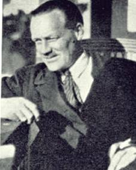

|  |
Adie's syndrome = A condition in which one or both pupils is dilated and responds slowly or not at all to light and a near stimulus, accompanied by slow constriction and relaxation in the change from near to distant vision, and impaired accommodation.
William John Adie was born in the harbour city of Geelong, west of Melbourne on the southern coast of Australia. He received his first education at Flinder’s School, but at the age of 13 he had to leave school in order to support the family, as his father had died in 1899. He worked as an errand runner in an office. One of his employers recognised his capacity for learning and paid evening courses for him. Thus he was able to pass the examination necessary for university entry. One of his topics was German, which had had learned mostly from visiting sailors. It was a practician in his native city, Dr. Arthur South, who inspired Adie to embark on a medical career.
At the time a medical education in Melbourne was very expensive. An uncle of his in Boston, U.S.A., arranged a £ 19 one-way ticket for him with the destination England. He was twenty years old at the time.
He soon ended up in Edinburgh, where he, aided by his uncle and a scholarship, graduated in medicine in 1911. His uncle tried to entice him to come back to Australia, but Adie liked life in Great Britain and was to spend the rest of his life there.
He soon took a special interest in neurology, a discipline in which his knowledge of German came to good use, as he was awarded a postgraduate travelling scholarship which enabled him to continue his work in Berlin, Munich, Vienna, and Paris. After about a year he returned to The National Hospital for the Paralysed and Epileptic on Queen Square in London.
At the outbreak of World War I Adie joined the Northamptonshire Regiment and served as a field physician in France, where he took part in the retreat from Mons, although a timely bout of measles kept him from the battle in which his regiment was decimated. He was then transferred to the Leicestershire Regiment and saw extensive active service during the next two years. In 1916 he was mentioned in despatches for saving a number of soldiers in one of the early gas attacks by improvising a mask of clothing soaked in urine! He subsequently took charge of the 7th General Hospital, and also acted as a consultant in the management of head injuries.
In 1916, while on leave, Adie married Lorraine Bonar, a girl he had met in Edinburgh. They had two children, a son and a daughter.
After the war Adie became medical registrar in the Charing Cross Hospital, London, and eventually joined the staff of the National Hospital for Nervous Disease, Queen’s Square and Moorfields Eye Hospital. He was a very able teacher and diagnostician, treating his students as he would his colleagues.
In 1925 Adie was at the peak of his career. He was awarded a gold medal from the University of Edinburgh and even elected Fellow of the Royal College of Physicians.
At the age of 45 Adie began having problems with angina pectoris. In 1935 he was forced to resign his work, aged only 48. He died from a myocardial infarct on March 17 that year.
Adie had great intellectual gifts and he was an acute clinical observer and a fine teacher. He was also a kindly, modest, approachable man and he was held in high regard by his students. He lived an active life and had many interests. In particular, he was a keen ornithologist and tennis player and he enjoyed skiing and skating during his holidays in Switzerland. His greatness and popularity is well mirrored in the numerous and extensive obituaries in British Medical Journal and Lancet, among many. In his native town the youth who had accomplished so much on the other side of the earth was not forgotten. The daily newspaper Geelon Advertiser wrote a long obituary under the title ”Geelong boy who made good in London.”
With his friend and mentor, James Collier Adie was responsible for the section on neurology in Price’s Textbook of Practical Medicine.
Adie also described narcolepsy (Gélineau’s syndrome):